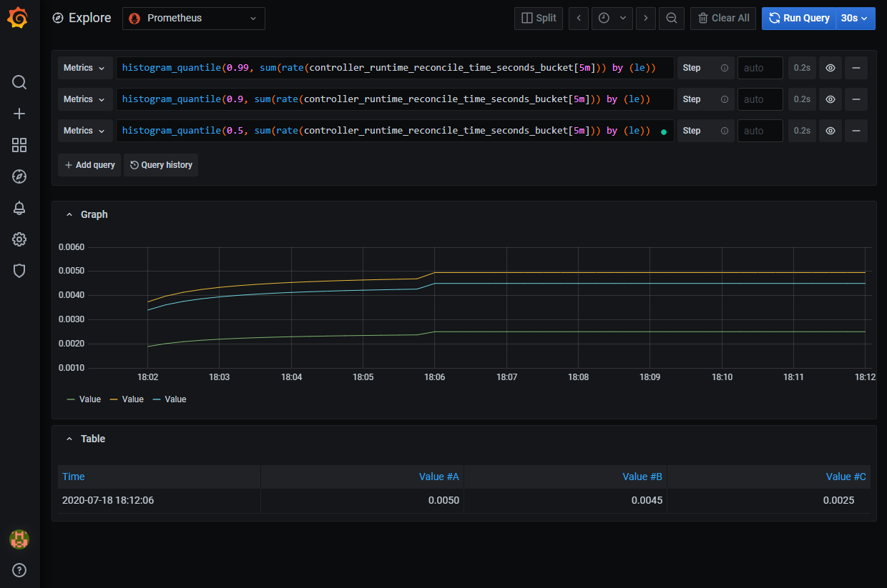

メトリクスの収集
カスタムコントローラの運用にはメトリクス収集が重要です。 ここでは、Kubebuilderおよびcontroller-runtimeが提供するメトリクス収集の仕組みについて紹介します。
metricsListener
controller-runtimeのmanagerには、メトリクスを公開するための仕組みが用意されています。
使い方は非常に簡単で、NewManagerのオプションでMetricsBindAddressを指定するだけです。
mgr, err := ctrl.NewManager(ctrl.GetConfigOrDie(), ctrl.Options{
Scheme: scheme,
MetricsBindAddress: metricsAddr,
Port: 9443,
LeaderElection: enableLeaderElection,
LeaderElectionID: "27475f02.example.com",
HealthProbeBindAddress: probeAddr,
})
これだけでCPUやメモリの使用量などの基本的なメトリクスと、Reconcileにかかった時間やKubernetesクライアントのレイテンシーなど、controller-runtime関連のメトリクスが収集できるようになります。
どのようなメトリクスが取得できるのか簡単に見てみましょう。
まずはメトリクス用のポートをPort Forwardします。
kubectl -n tenant-system port-forward tenant-controller-manager-5d6f8bbd95-h5jpx 8080:8080
下記のようなメトリクスが収集できます。(一部省略しています)
$ curl localhost:8080/metrics
# HELP controller_runtime_reconcile_errors_total Total number of reconciliation errors per controller
# TYPE controller_runtime_reconcile_errors_total counter
controller_runtime_reconcile_errors_total{controller="tenant"} 15
# HELP controller_runtime_reconcile_time_seconds Length of time per reconciliation per controller
# TYPE controller_runtime_reconcile_time_seconds histogram
controller_runtime_reconcile_time_seconds_bucket{controller="tenant",le="0.005"} 20
# HELP controller_runtime_reconcile_total Total number of reconciliations per controller
# TYPE controller_runtime_reconcile_total counter
controller_runtime_reconcile_total{controller="tenant",result="error"} 15
controller_runtime_reconcile_total{controller="tenant",result="success"} 7
# HELP controller_runtime_webhook_requests_in_flight Current number of admission requests being served.
# TYPE controller_runtime_webhook_requests_in_flight gauge
controller_runtime_webhook_requests_in_flight{webhook="/mutate-multitenancy-example-com-v1-tenant"} 0
controller_runtime_webhook_requests_in_flight{webhook="/validate-multitenancy-example-com-v1-tenant"} 0
# HELP controller_runtime_webhook_requests_total Total number of admission requests by HTTP status code.
# TYPE controller_runtime_webhook_requests_total counter
controller_runtime_webhook_requests_total{code="200",webhook="/mutate-multitenancy-example-com-v1-tenant"} 0
controller_runtime_webhook_requests_total{code="200",webhook="/validate-multitenancy-example-com-v1-tenant"} 0
controller_runtime_webhook_requests_total{code="500",webhook="/mutate-multitenancy-example-com-v1-tenant"} 0
controller_runtime_webhook_requests_total{code="500",webhook="/validate-multitenancy-example-com-v1-tenant"} 0
# HELP rest_client_request_latency_seconds Request latency in seconds. Broken down by verb and URL.
# TYPE rest_client_request_latency_seconds histogram
rest_client_request_latency_seconds_bucket{url="https://10.96.0.1:443/%7Bprefix%7D",verb="GET",le="0.001"} 0
# HELP rest_client_requests_total Number of HTTP requests, partitioned by status code, method, and host.
# TYPE rest_client_requests_total counter
rest_client_requests_total{code="200",host="10.96.0.1:443",method="GET"} 128
rest_client_requests_total{code="200",host="10.96.0.1:443",method="PUT"} 76
rest_client_requests_total{code="201",host="10.96.0.1:443",method="POST"} 8
# HELP workqueue_adds_total Total number of adds handled by workqueue
# TYPE workqueue_adds_total counter
workqueue_adds_total{name="tenant"} 22
# HELP workqueue_depth Current depth of workqueue
# TYPE workqueue_depth gauge
workqueue_depth{name="tenant"} 0
# HELP workqueue_longest_running_processor_seconds How many seconds has the longest running processor for workqueue been running.
# TYPE workqueue_longest_running_processor_seconds gauge
workqueue_longest_running_processor_seconds{name="tenant"} 0
# HELP workqueue_queue_duration_seconds How long in seconds an item stays in workqueue before being requested
# TYPE workqueue_queue_duration_seconds histogram
workqueue_queue_duration_seconds_bucket{name="tenant",le="1e-08"} 0
# HELP workqueue_retries_total Total number of retries handled by workqueue
# TYPE workqueue_retries_total counter
workqueue_retries_total{name="tenant"} 15
# HELP workqueue_unfinished_work_seconds How many seconds of work has been done that is in progress and hasn't been observed by work_duration. Large values indicate stuck threads. One can deduce the number of stuck threads by observing the rate at which this increases.
# TYPE workqueue_unfinished_work_seconds gauge
workqueue_unfinished_work_seconds{name="tenant"} 0
# HELP workqueue_work_duration_seconds How long in seconds processing an item from workqueue takes.
# TYPE workqueue_work_duration_seconds histogram
workqueue_work_duration_seconds_bucket{name="tenant",le="1e-08"} 0
カスタムメトリクス
controller-runtimeが提供するメトリクスだけでなく、カスタムコントローラ固有のメトリクスを収集することもできます。 詳しくはPrometheusのドキュメントを参照してください。
ここではテナントコントローラが作成したnamespaceと削除したnamespaceの数をメトリクスとして表示してみましょう。
package controllers
import (
"github.com/prometheus/client_golang/prometheus"
"sigs.k8s.io/controller-runtime/pkg/metrics"
)
var (
addedNamespaces = prometheus.NewCounter(
prometheus.CounterOpts{
Name: "added_namespaces",
Namespace: "tenant_controller",
Help: "Number of added namespaces",
},
)
removedNamespaces = prometheus.NewCounter(
prometheus.CounterOpts{
Name: "removed_namespaces",
Namespace: "tenant_controller",
Help: "Number of removed namespaces",
},
)
)
func init() {
metrics.Registry.MustRegister(addedNamespaces, removedNamespaces)
}
Reconcile処理の中で、namespaceの作成に成功したときに以下の処理を呼び出します。
err = r.Create(ctx, &target, &client.CreateOptions{})
if err != nil {
log.Error(err, "unable to create the namespace", "name", name)
return updated, err
}
addedNamespaces.Inc()
先ほどと同様にメトリクスを確認してみましょう。 下記の項目が増えていれば成功です。
$ curl localhost:8080/metrics
# HELP tenant_controller_added_namespaces Number of added namespaces
# TYPE tenant_controller_added_namespaces counter
tenant_controller_added_namespaces 2
# HELP tenant_controller_removed_namespaces Number of removed namespaces
# TYPE tenant_controller_removed_namespaces counter
tenant_controller_removed_namespaces 0
kube-rbac-proxy
Kubebuilderで生成したプロジェクトには、kube-rbac-proxyを利用できるようにマニフェストが記述されています。 kube-rbac-proxyを利用すると、メトリクスのエンドポイントにアクセスするための権限をRBACで指定することができるようになります。
kube-rbac-proxyを利用するためには下記のコメントアウトを解除します。
patchesStrategicMerge:
# Protect the /metrics endpoint by putting it behind auth.
# If you want your controller-manager to expose the /metrics
# endpoint w/o any authn/z, please comment the following line.
- manager_auth_proxy_patch.yaml
resources:
- role.yaml
- role_binding.yaml
- leader_election_role.yaml
- leader_election_role_binding.yaml
# Comment the following 4 lines if you want to disable
# the auth proxy (https://github.com/brancz/kube-rbac-proxy)
# which protects your /metrics endpoint.
- auth_proxy_service.yaml
- auth_proxy_role.yaml
- auth_proxy_role_binding.yaml
- auth_proxy_client_clusterrole.yaml
Grafanaでの可視化
それでは実際にPrometheusとGrafanaを使って、コントローラのメトリクスを可視化してみましょう。
まずはマニフェストの準備をします。 下記のコメントアウトを解除してください。
bases:
# [PROMETHEUS] To enable prometheus monitor, uncomment all sections with 'PROMETHEUS'.
- ../prometheus
prometheus/monitor.yamlは、Kubebuilderが生成した内容では動作しないため、設定を以下のように書き換えます。
# Prometheus Monitor Service (Metrics)
apiVersion: monitoring.coreos.com/v1
kind: ServiceMonitor
metadata:
labels:
control-plane: controller-manager
name: controller-manager-metrics-monitor
namespace: system
spec:
endpoints:
- path: /metrics
port: https
scheme: https
bearerTokenFile: /var/run/secrets/kubernetes.io/serviceaccount/token
tlsConfig:
insecureSkipVerify: true
selector:
matchLabels:
control-plane: controller-manager
make manifestsを実行してマニフェストを生成し、Kubernetesクラスタに適用しておきます。
Prometheus Operatorをセットアップするために、下記の手順に従ってHelmをインストールします。
つぎにHelmのリポジトリの登録をおこないます。
helm repo add stable https://kubernetes-charts.storage.googleapis.com/
Prometheus Operatorをセットアップします。完了まで少し時間がかかるので待ちましょう。
kubectl create ns prometheus
helm install prometheus stable/prometheus-operator --namespace=prometheus --set prometheus.prometheusSpec.serviceMonitorSelectorNilUsesHelmValues=false
kubectl wait pod --all -n prometheus --for condition=Ready --timeout 180s
起動したPrometheusにメトリクスを読み取る権限を付与する必要があるので、下記のマニフェストを適用します。
apiVersion: rbac.authorization.k8s.io/v1
kind: ClusterRoleBinding
metadata:
name: metrics
roleRef:
apiGroup: rbac.authorization.k8s.io
kind: ClusterRole
name: tenant-metrics-reader
subjects:
- kind: ServiceAccount
name: prometheus-prometheus-oper-prometheus
namespace: prometheus
kubectl apply -f ./config/rbac/prometheus_role_binding.yaml
ローカル環境からGrafanaの画面を確認するためにポートフォワードの設定をおこないます。
kubectl port-forward service/prometheus-grafana 3000:80 --address 0.0.0.0 --namespace prometheus
ブラウザからhttp://localhost:3000を開くとGrafanaの画面が確認できると思いますので、ユーザー名とパスワードを入力してログインします。
- Username:
admin - Password:
prom-operator
Explore画面を開いて以下のようなPromQLを入力してみましょう。これによりReconcileにかかっている処理時間をモニタリングすることができます。
histogram_quantile(0.99, sum(rate(controller_runtime_reconcile_time_seconds_bucket[5m])) by (le))
